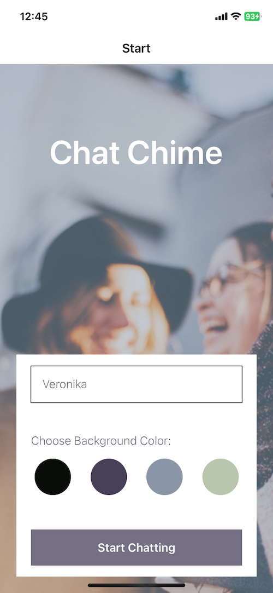
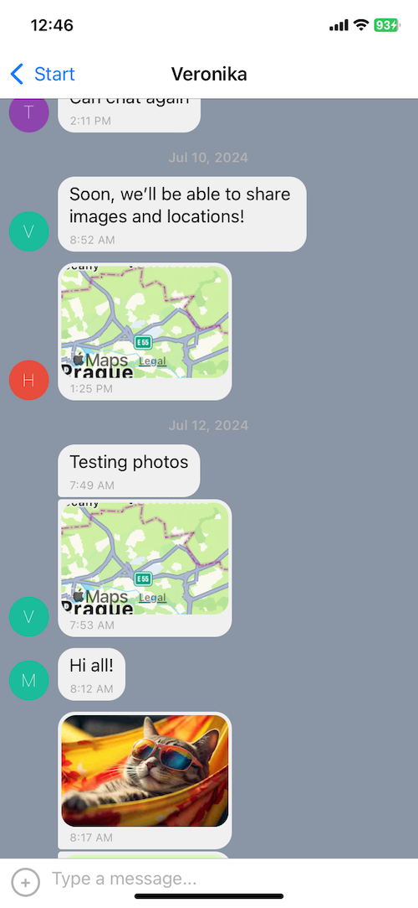

Chat Chime
Description
- Chat Chime is a chat app for mobile devices using React Native.
- The app provides users with a chat interface and options to share images and their location.
- Data such as chat messages and images are stored in Google Firebase (Firestore Databse and Storage). Chat UI is powered by Gifted Chat.


Key Features
- A page where users can enter their name and choose a background color for the chat screen before joining the chat.
- A page displaying the conversation, as well as an input field and submit button.
- The chat must provide users with two additional communication features: sending images and location data.
- Data gets stored online and offline.
Technologies Used
- React Native
- Expo
- Expo Go
- Firebase
- Gifted Chat
- React Navigator
- React Native Maps
- Android Emulator
Methodologies
- Mobile development
- RTA through WebSockets (built-in with Firebase)
- Testing of mobile apps, emulators
- Storing data on the client side for native apps
- Offline accessibility - AsyncStorage, NetInfo
- Customizing UI components per mobile platform
- Communication features - leveraging device’s native services such as image libraries, camera, GPS and integrate into chat (ActionSheet)
- Styling and accessibility in React Native/for mobile apps
- Navigation between mobile screens